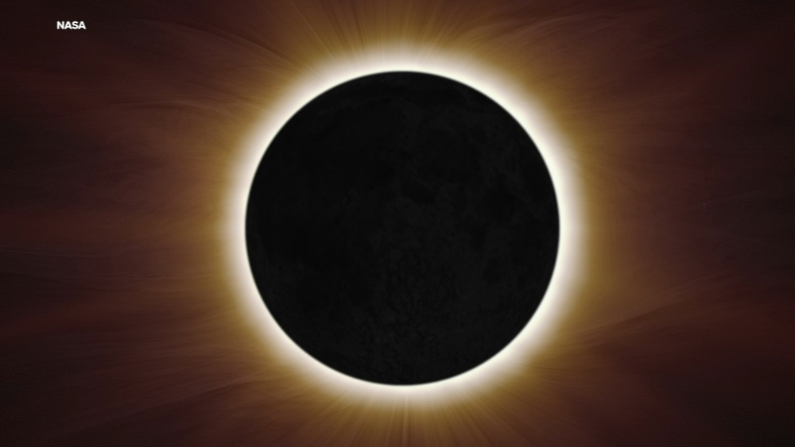

천문현상
우주 공간에서 천체들이 움직이며 만들어내는 현상들은 오랫동안 인류에게 경외심을 심어주었습니다. 지구의 자전과 공전, 그리고 달과 행성들의 규칙적인 궤도 운동이 결합하여 매년 역동적인 우주 쇼를 연출합니다.
현대 천문학의 발전으로 이러한 현상들이 일어나는 정확한 시기와 원리를 예측할 수 있게 되었으며, 전 세계 수많은 이들이 이를 관측하기 위해 여행을 떠나기도 합니다.
일식과 월식일식·월식태양-달-지구가 일직선상에 놓일 때 발생합니다. 달이 태양을 가리는 일식은 낮이 밤처럼 어두워지는 장관을 연출하며, 지구의 그림자가 달을 가리는 월식 때는 달이 붉은빛(블러드문)으로 변하는 신비로운 모습을 볼 수 있습니다. |
 |
유성우별똥별혜성이나 소행성이 지나간 자리에 남은 부스러기 궤도를 지구가 통과할 때, 이 파편들이 지구 대기권과 충돌하며 불타오르는 현상입니다. 페르세우스자리 유성우, 쌍둥이자리 유성우 등이 대표적이며 1시간에 수십 개의 별똥별이 떨어집니다. |
 |
오로라극광태양에서 방출된 입자가 지구 자기장에 이끌려 양 극지방의 대기 입자와 충돌하면서 빛을 내는 현상입니다. 주로 고위도 지역의 밤하늘을 초록색, 보라색의 커튼 형상으로 화려하게 수놓습니다. |
 |
은하수미리내우리가 속해 있는 은하의 단면을 지구에서 바라본 모습입니다. 맑고 어두운 밤하늘을 가로지르는 은빛 천 모양의 거대한 별들의 강처럼 보이며, 여름철에 가장 뚜렷하고 화려한 은하의 중심부를 관측할 수 있습니다. |
 |